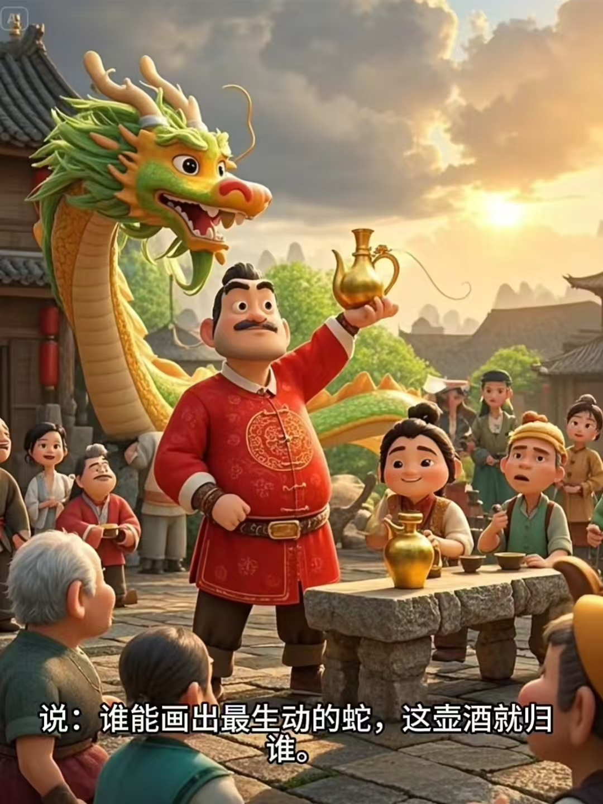
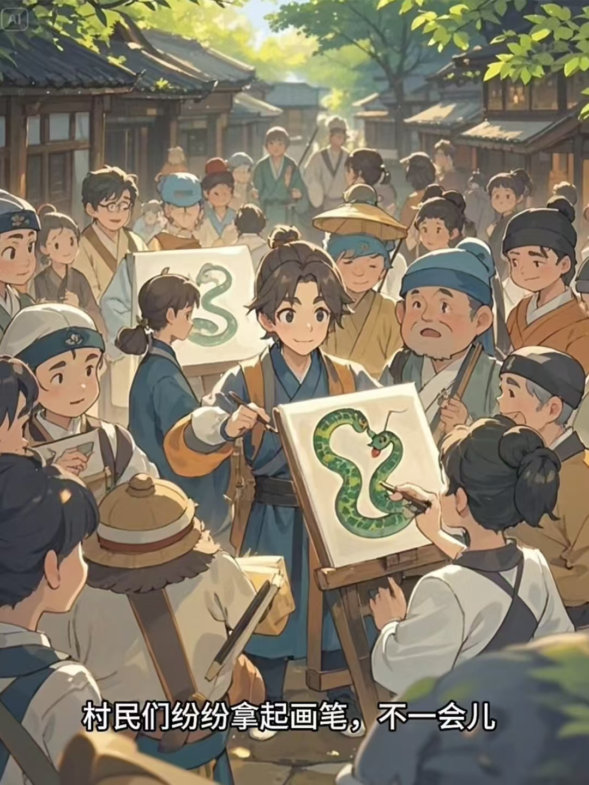
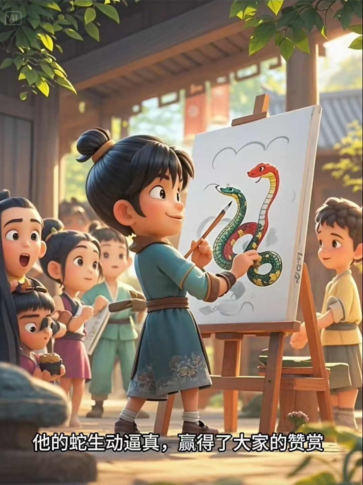
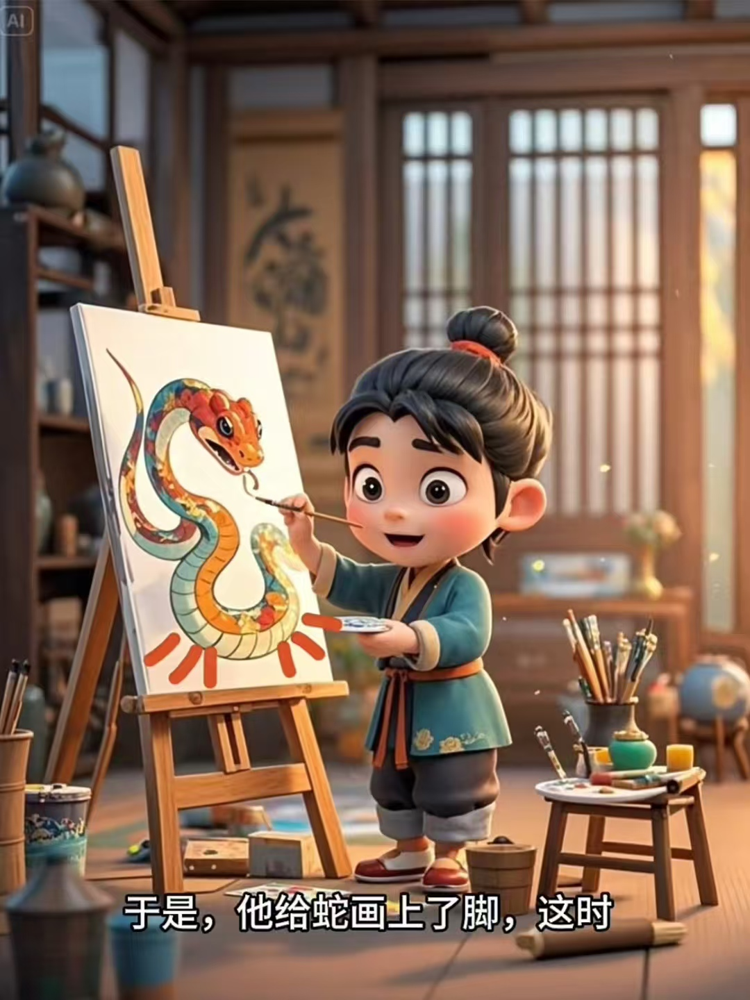
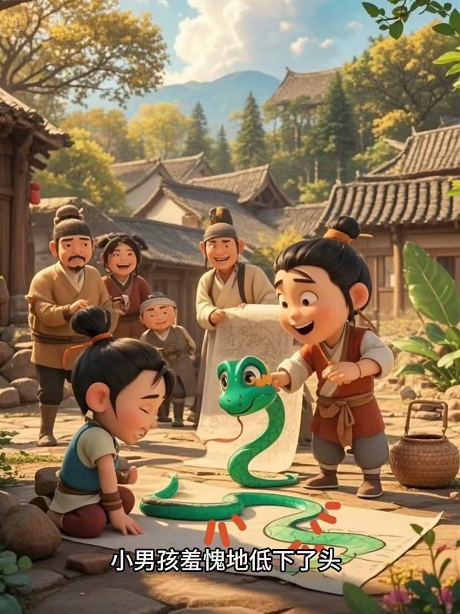

画蛇添足 (huà shé tiān zú)
以下是基于成语 “画蛇添足” 生成的文生视频，包括5张关键帧图片及描述。
关键帧描述
- 关键帧 1：蛇的轮廓逐渐显现，初步绘制。
- 关键帧 2：蛇的身体完成，画笔开始绘制不自然的脚。
- 关键帧 3：蛇的脚逐渐变得更加明显，开始显得不协调。
- 关键帧 4：背景开始模糊，蛇和其附加的脚成为画面焦点。
- 关键帧 5：蛇的头部显现，脚变得更加突兀，形成对比，最终造成一种不和谐的感觉。
生成的关键帧





文生视频
视频配乐与解说
配乐：背景音乐是轻柔的钢琴曲，旨在衬托画面中的细腻变化。
解说：结合成语“画蛇添足”的寓意，解说讲述了画蛇和多余脚的形成过程，突出“不必要的多余行动”这一主题。